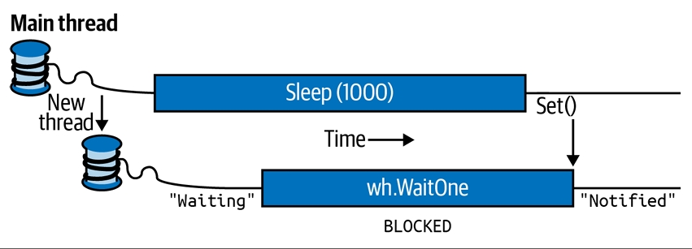
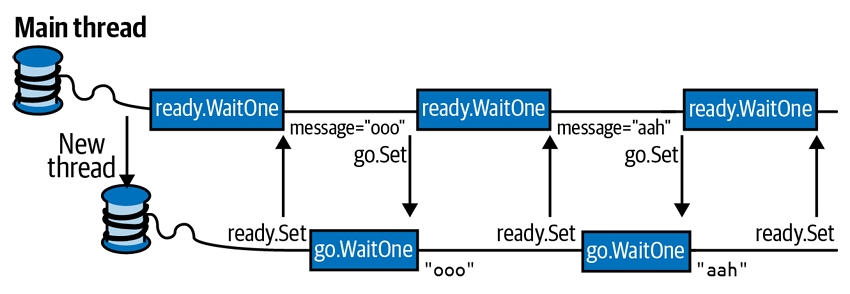

فصل بیست و یکم: Threading پیشرفته
ما در فصل ۱۴ با مبانی اولیهی Threading شروع کردیم تا مقدمهای برای Tasks و Asynchrony باشد. به طور مشخص، نشان دادیم چطور میتوان یک Thread را شروع و پیکربندی کرد و مفاهیم اساسی مثل Thread Pooling، Blocking، Spinning و Synchronization Contexts را پوشش دادیم. همچنین به Locking و Thread Safety پرداختیم و سادهترین سازهی سیگنالدهی، یعنی ManualResetEvent را معرفی کردیم.
این فصل دقیقاً از همانجایی ادامه پیدا میکند که فصل ۱۴ در موضوع Threading متوقف شد. در سه بخش اول، بهطور عمیقتر به Synchronization، Locking و Thread Safety میپردازیم. سپس موارد زیر را پوشش میدهیم:
- 🔓 Nonexclusive locking (مانند Semaphore و Reader/Writer Locks)
- 🔔 همهی سازههای سیگنالدهی (AutoResetEvent، ManualResetEvent، CountdownEvent و Barrier)
- 🐢 Lazy Initialization (با استفاده از Lazy
و LazyInitializer) - 🧩 Thread-local storage (مانند ThreadStaticAttribute، ThreadLocal
و GetData/SetData) - ⏱ Timers
موضوع Threading آنقدر وسیع است که ما بخشهای تکمیلی را بهصورت آنلاین قرار دادهایم تا تصویر کاملتری ارائه شود. برای مطالعهی موضوعات پیشرفتهتر، به وبسایت زیر مراجعه کنید:
🔗 http://albahari.com/threading
در آنجا مباحث زیر را خواهید یافت:
- ⚙️ Monitor.Wait و Monitor.Pulse برای سناریوهای خاص سیگنالدهی
- 🚀 تکنیکهای Nonblocking Synchronization برای Micro-Optimization (مانند Interlocked، Memory Barriers، volatile)
- 🔄 SpinLock و SpinWait برای سناریوهای با Concurrency بالا
🔑 Synchronization Overview (مرور Synchronization)
Synchronization یعنی هماهنگسازی عملیات همزمان برای دستیابی به یک نتیجهی قابل پیشبینی. این موضوع بهویژه وقتی اهمیت پیدا میکند که چندین Thread به دادهی مشترک دسترسی دارند؛ در این شرایط، خیلی راحت میتوان دچار مشکل شد.
سادهترین و کاربردیترین ابزارهای Synchronization احتمالاً همان Continuations و Task Combinators هستند که در فصل ۱۴ توضیح دادیم. با فرموله کردن برنامههای همزمان در قالب عملیات Asynchronous که با Continuations و Combinators به هم متصل میشوند، نیاز به Locking و Signaling کمتر میشود. با این حال، هنوز مواقعی وجود دارد که سازههای سطح پایینتر وارد عمل میشوند.
سازههای Synchronization را میتوان به سه دسته تقسیم کرد:
-
🔒 Exclusive Locking
این سازهها اجازه میدهند فقط یک Thread در هر لحظه فعالیت خاصی انجام دهد یا بخشی از کد را اجرا کند. هدف اصلی آنها این است که Threads بتوانند به وضعیت مشترک در حال نوشتن دسترسی داشته باشند بدون اینکه مزاحم هم شوند. سازههای Exclusive Locking عبارتاند از:
lock، Mutex و SpinLock. -
🔓 Nonexclusive Locking
این نوع Locking به شما اجازه میدهد میزان Concurrency را محدود کنید. سازههای آن عبارتاند از:
Semaphore(Slim) و ReaderWriterLock(Slim). -
📢 Signaling
این سازهها به یک Thread اجازه میدهند تا زمانی که از یک یا چند Thread دیگر اطلاع (Notification) دریافت نکرده، در حالت Block باقی بماند. سازههای Signaling شامل ManualResetEvent(Slim)، AutoResetEvent، CountdownEvent و Barrier هستند. سه مورد اول معمولاً با عنوان Event Wait Handles شناخته میشوند.
همچنین امکان (و البته دشواری) انجام برخی عملیات همزمان روی دادهی مشترک بدون استفاده از Locking وجود دارد، با کمک سازههای Nonblocking Synchronization. این سازهها عبارتاند از:
Thread.MemoryBarrier، Thread.VolatileRead، Thread.VolatileWrite، کلیدواژهی volatile و کلاس Interlocked.
ما این موضوع را به همراه متدهای Monitor.Wait/Pulse که برای نوشتن منطق سفارشی سیگنالدهی کاربرد دارند، بهصورت آنلاین پوشش دادهایم.
🔐 Exclusive Locking (قفلگذاری انحصاری)
سه سازهی اصلی برای Exclusive Locking وجود دارد: دستور lock، Mutex و SpinLock.
- دستور lock راحتترین و پرکاربردترین گزینه است.
- Mutex زمانی استفاده میشود که بخواهید قفل را بین چندین Process گسترش دهید (قفلهای سطح کامپیوتر).
- SpinLock یک Micro-Optimization است که میتواند در سناریوهای با Concurrency بالا باعث کاهش Context Switches شود. 🔄
🔒 The lock Statement (دستور lock)
برای نشان دادن نیاز به Locking، کلاس زیر را در نظر بگیرید:
class ThreadUnsafe
{
static int _val1 = 1, _val2 = 1;
static void Go()
{
if (_val2 != 0) Console.WriteLine (_val1 / _val2);
_val2 = 0;
}
}
این کلاس Thread-Safe نیست: اگر متد Go بهطور همزمان توسط دو Thread فراخوانی شود، امکان رخ دادن خطای Division by Zero وجود دارد. چرا؟ چون ممکن است در همان لحظهای که یک Thread بین اجرای دستور if و Console.WriteLine است، Thread دیگر مقدار _val2 را برابر صفر قرار دهد.
اینجاست که دستور lock مشکل را حل میکند:
class ThreadSafe
{
static readonly object _locker = new object();
static int _val1 = 1, _val2 = 1;
static void Go()
{
lock (_locker)
{
if (_val2 != 0) Console.WriteLine (_val1 / _val2);
_val2 = 0;
}
}
}
فقط یک Thread در هر لحظه میتواند شیء همگامساز (در اینجا _locker) را قفل کند. هر Thread دیگری که برای قفل رقابت کند، Blocked میشود تا زمانی که قفل آزاد شود.
اگر بیش از یک Thread برای قفل رقابت کند، آنها در یک Ready Queue قرار میگیرند و به ترتیب ورود، قفل به آنها داده میشود (البته ✍️ در بعضی شرایط سیستمعامل Windows و CLR ممکن است این عدالت نقض شود).
به همین دلیل، قفلهای انحصاری را گاهی اوقات طوری توصیف میکنند که دسترسی سریالی را به چیزی که توسط قفل محافظت میشود، اعمال میکنند؛ زیرا دسترسی یک Thread نمیتواند با دیگری همپوشانی داشته باشد. در این مثال، ما هم منطق داخل متد Go و هم فیلدهای _val1 و _val2 را محافظت کردهایم.
⚙️ Monitor.Enter و Monitor.Exit
دستور lock در C# در حقیقت یک میانبر نحوی (Syntactic Shortcut) برای فراخوانی متدهای Monitor.Enter و Monitor.Exit به همراه یک بلوک try/finally است.
بهطور ساده، کدی که در متد Go اتفاق میافتد، معادل زیر است:
Monitor.Enter (_locker);
try
{
if (_val2 != 0) Console.WriteLine (_val1 / _val2);
_val2 = 0;
}
finally { Monitor.Exit (_locker); }
⚠️ اگر متد Monitor.Exit بدون اینکه قبلاً Monitor.Enter روی همان شیء صدا زده شده باشد، فراخوانی شود، یک Exception پرتاب میشود.
🛡 overloadهای lockTaken
کدی که در بالا دیدیم یک آسیبپذیری ظریف دارد. فرض کنید (هرچند بعید) یک Exception بین فراخوانی Monitor.Enter و شروع بلوک try رخ دهد (مثلاً یک OutOfMemoryException یا در .NET Framework اگر Thread متوقف شود).
در این شرایط:
- اگر قفل گرفته نشده باشد، خطری وجود ندارد.
- اما اگر قفل گرفته شده باشد، چون هیچوقت وارد بلوک
try/finallyنمیشویم، قفل آزاد نخواهد شد. این یعنی Leak شدن قفل.
برای جلوگیری از این مشکل، متد زیر در Monitor.Enter تعریف شده است:
public static void Enter (object obj, ref bool lockTaken);
🔎 اگر و فقط اگر متد Enter یک Exception پرتاب کند و قفل گرفته نشده باشد، مقدار lockTaken برابر false خواهد بود.
الگوی درست استفاده از آن (و همان چیزی که کامپایلر C# در پشتصحنه برای دستور lock تولید میکند) به شکل زیر است:
bool lockTaken = false;
try
{
Monitor.Enter (_locker, ref lockTaken);
// Do your stuff...
}
finally { if (lockTaken) Monitor.Exit (_locker); }
⏱ TryEnter
کلاس Monitor همچنین متدی به نام TryEnter ارائه میدهد که به شما اجازه میدهد یک Timeout مشخص کنید (بر حسب Milliseconds یا یک TimeSpan).
- اگر قفل گرفته شود، مقدار true برمیگرداند.
- اگر قفل بهدلیل Timeout گرفته نشود، مقدار false برمیگرداند.
علاوه بر این، متد TryEnter میتواند بدون هیچ آرگومانی فراخوانی شود. در این حالت، فقط قفل را تست میکند و اگر بلافاصله نتواند قفل را بگیرد، بدون معطلی false برمیگرداند.
📌 درست مثل متد Enter، متد TryEnter هم یک نسخهی overload دارد که از آرگومان lockTaken پشتیبانی میکند.
🔑 Choosing the Synchronization Object (انتخاب شیء همگامساز)
شما میتوانید از هر شیئی که برای Threadهای شرکتکننده قابل مشاهده باشد، بهعنوان شیء همگامساز استفاده کنید؛ با این شرط مهم که آن شیء باید یک Reference Type باشد.
شیء همگامساز معمولاً private است (چون این کار باعث میشود منطق قفلگذاری بهتر Encapsulate شود) و معمولاً یک Instance Field یا یک Static Field است.
گاهی اوقات شیء همگامساز همان شیء محافظتشده است. مانند فیلد _list در مثال زیر:
class ThreadSafe
{
List<string> _list = new List<string>();
void Test()
{
lock (_list)
{
_list.Add("Item 1");
...
}
}
}
البته داشتن یک فیلد اختصاصی برای قفلگذاری (مثل _locker در مثال قبلی) کنترل دقیقتری روی Scope و Granularity قفل فراهم میکند.
همچنین میتوانید از شیء حاوی (یعنی this) بهعنوان شیء همگامساز استفاده کنید:
lock (this) { ... }
یا حتی از نوع کلاس استفاده کنید:
lock (typeof(Widget)) { ... } // برای محافظت از فیلدهای static
❌ عیب این روشها این است که منطق قفلگذاری Encapsulate نمیشود و همین میتواند مدیریت Deadlock و Blocking بیش از حد را سختتر کند.
شما حتی میتوانید روی متغیرهای محلی که توسط Lambda Expressions یا Anonymous Methods گرفته شدهاند نیز قفل بگذارید.
⏰ When to Lock (چه زمانی باید قفل کنیم)
قفل کردن دسترسی به خود شیء همگامساز را محدود نمیکند. به عبارت دیگر، اگر متدی مثل x.ToString() فراخوانی شود، Blocked نخواهد شد فقط به این دلیل که یک Thread دیگر روی lock(x) قفل کرده است.
فقط زمانی Blocking اتفاق میافتد که هر دو Thread از lock(x) استفاده کنند.
قاعدهی پایهای این است:
🔒 شما باید همیشه هنگام دسترسی به هر Shared Writable Field از قفل استفاده کنید.
حتی در سادهترین حالت—مثلاً یک عمل Assignment روی یک فیلد—باید Synchronization را در نظر بگیرید.
به مثال زیر توجه کنید:
class ThreadUnsafe
{
static int _x;
static void Increment() { _x++; }
static void Assign() { _x = 123; }
}
این کلاس Thread-Safe نیست. نسخهی ایمنتر آن به شکل زیر است:
static readonly object _locker = new object();
static int _x;
static void Increment() { lock (_locker) _x++; }
static void Assign() { lock (_locker) _x = 123; }
⚠️ مشکلات بدون Lock
اگر قفل وجود نداشته باشد، دو مشکل رخ میدهد:
- ➕ عملیاتهایی مثل افزایش مقدار یک متغیر (یا حتی خواندن/نوشتن آن در شرایط خاص) Atomic نیستند.
- ⚡ Compiler، CLR و Processor مجاز هستند برای بهبود کارایی، دستورات را Reorder کنند یا متغیرها را در CPU Registers کش کنند—تا زمانی که این بهینهسازیها رفتار یک برنامهی تکریسمانی (یا چندریسمانی که از قفل استفاده میکند) را تغییر ندهد.
قفلها مشکل دوم را با ایجاد یک Memory Barrier قبل و بعد از قفل کاهش میدهند.
🧱 Memory Barrier مانند یک حصار است که مانع عبور اثرات Reordering و Caching میشود.
این قاعده فقط مخصوص قفلها نیست؛ بلکه برای همهی سازههای Synchronization صدق میکند.
مثال: اگر یک سازهی سیگنالدهی تضمین کند که فقط یک Thread در هر لحظه متغیری را بخواند/بنویسد، دیگر نیازی به قفل ندارید:
var signal = new ManualResetEvent(false);
int x = 0;
new Thread(() => { x++; signal.Set(); }).Start();
signal.WaitOne();
Console.WriteLine(x); // همیشه 1
در بخش «Nonblocking Synchronization» توضیح دادهایم که چرا چنین نیازی پیش میآید و چگونه Memory Barriers و کلاس Interlocked میتوانند جایگزین قفل در این سناریوها باشند.
🔗 Locking and Atomicity (قفلگذاری و اتمیک بودن)
اگر گروهی از متغیرها همیشه درون یک قفل خوانده یا نوشته شوند، میتوان گفت این متغیرها به شکل Atomic دسترسی دارند.
مثال:
lock (locker) { if (x != 0) y /= x; }
در این حالت، متغیرهای x و y بهصورت Atomic دسترسی داده میشوند؛ یعنی هیچ Thread دیگری نمیتواند در میانهی این عملیات آنها را تغییر دهد و نتیجه را بیاعتبار کند. بنابراین، شما هرگز خطای Division by Zero دریافت نمیکنید، مشروط بر اینکه x و y همیشه در همین قفل انحصاری دسترسی داده شوند.
🚨 استثناها و Atomicity
اتمیک بودن قفل نقض میشود اگر داخل بلوک قفل یک Exception رخ دهد (چه برنامه چندریسمانی باشد چه نباشد).
مثال:
decimal _savingsBalance, _checkBalance;
void Transfer(decimal amount)
{
lock (_locker)
{
_savingsBalance += amount;
_checkBalance -= amount + GetBankFee();
}
}
اگر متد GetBankFee() یک Exception پرتاب کند، بانک پول از دست میدهد! 🏦💸
در این شرایط میتوان مشکل را با فراخوانی GetBankFee پیش از ورود به بلوک قفل برطرف کرد.
🔄 برای موارد پیچیدهتر، یک راهحل این است که منطق Rollback را داخل یک بلوک catch یا finally پیادهسازی کنیم.
⚡ Instruction Atomicity
مفهوم Instruction Atomicity متفاوت اما مشابه است: یک دستور Atomic است اگر روی پردازندهی زیرین بهطور غیرقابل تقسیم اجرا شود.
🔐 قفلهای تو در تو (Nested Locking)
یک Thread میتواند بارها یک شیء را بهصورت تو در تو (یا Reentrant) قفل کند:
lock (locker)
lock (locker)
lock (locker)
{
// Do something...
}
یا به روش دیگر:
Monitor.Enter (locker);
Monitor.Enter (locker);
Monitor.Enter (locker);
// Do something...
Monitor.Exit (locker);
Monitor.Exit (locker);
Monitor.Exit (locker);
در این حالتها، شیء تنها زمانی آزاد (unlock) میشود که یا خارجیترین دستور lock پایان یافته باشد، یا تعداد متناظری از Monitor.Exit اجرا شده باشد.
🔁 قفل تو در تو زمانی مفید است که یک متد از داخل یک قفل، متد دیگری را صدا بزند:
object locker = new object();
lock (locker)
{
AnotherMethod();
// هنوز قفل داریم - چون قفلها Reentrant هستند
}
void AnotherMethod()
{
lock (locker) { Console.WriteLine ("Another method"); }
}
✅ در اینجا Thread تنها روی اولین (خارجیترین) قفل مسدود میشود.
⚠️ بنبستها (Deadlocks)
Deadlock زمانی اتفاق میافتد که دو Thread هرکدام منتظر یک منبع باشند که توسط دیگری قفل شده است؛ در نتیجه هیچکدام قادر به ادامه کار نخواهند بود.
مثال ساده با دو قفل:
object locker1 = new object();
object locker2 = new object();
new Thread (() => {
lock (locker1)
{
Thread.Sleep (1000);
lock (locker2); // Deadlock
}
}).Start();
lock (locker2)
{
Thread.Sleep (1000);
lock (locker1); // Deadlock
}
📌 در این حالت، هر Thread یکی از قفلها را گرفته و منتظر دیگری است → بنبست دائمی.
- در محیط عادی CLR، بر خلاف SQL Server، بنبستها بهصورت خودکار تشخیص و رفع نمیشوند.
- اگر بنبست رخ دهد، Threadها بهطور نامحدود مسدود میشوند (مگر اینکه زمانانتظار یا Timeout تعریف کرده باشید).
- در هاست SQL CLR (ادغام SQL Server با CLR)، بنبستها شناسایی میشوند و یک استثنای قابلمدیریت روی یکی از Threadها پرتاب میشود.
🔎 چرا Deadlock سخت است؟
- هنگام طراحی شیءگرا، ممکن است قفلها در زنجیرهای از متدهای تو در تو گرفته شوند که ترتیب آنها در زمان اجرا مشخص میشود.
- ممکن است شما روی فیلد
aدر کلاسxقفل بزنید، در حالی که فراخوانندهی شما قبلاً روی فیلدbدر کلاسyقفل زده باشد. همزمان Thread دیگری برعکس همین کار را انجام دهد → Deadlock. - الگوهای خوب طراحی شیءگرا (OOP) این مشکل را تشدید میکنند چون فراخوانیها در زمان اجرا تعیین میشوند.
✅ راهکارها برای کاهش Deadlock
-
قفلها را به ترتیب ثابت بگیرید (روش کلاسیک، ولی همیشه عملی نیست).
-
هنگام قفل کردن اطراف فراخوانی متدهای دیگر احتیاط کنید.
-
بررسی کنید آیا واقعاً لازم است هنگام فراخوانی متدهای دیگر قفل بگیرید یا خیر.
-
استفاده بیشتر از سینکرونسازی سطح بالاتر مثل:
- Task continuations/combinators
- Data parallelism
- Immutable types
💡 نکته: زمانی که در حین داشتن یک قفل، کدی بیرونی را صدا میزنید، کپسولهسازی قفل نشت میکند. این یک محدودیت ذاتی مکانیزم قفلگذاری است، نه یک ضعف CLR.
⚡️ سناریوی خاص Deadlock در UI
- در اپلیکیشنهای WPF:
Dispatcher.Invoke - در Windows Forms:
Control.Invoke
اگر اینها را هنگام داشتن یک قفل صدا بزنید و Thread UI منتظر همان قفل باشد → Deadlock.
راهحلها:
- استفاده از
BeginInvokeبهجایInvoke. - یا آزاد کردن قفل قبل از صدا زدن
Invoke(البته اگر قفل توسط Caller گرفته شده باشد، جواب نمیدهد).
🚀 کارایی (Performance)
- گرفتن و آزاد کردن قفل در حالت بدون رقابت (uncontended) روی سیستمهای 2020 کمتر از ۲۰ نانوثانیه طول میکشد.
- در حالت رقابتی (contended)، هزینه به حدود میکروثانیه میرسد (بهخاطر Context Switch).
- زمان واقعی باززمانبندی Thread ممکن است حتی بیشتر طول بکشد.
🔒 Mutex (موتکس)
یک Mutex شبیه به دستور lock در C# است، با این تفاوت که میتواند در چند پردازه (multi-process) هم کار کند. یعنی:
lockفقط داخل یک پردازه کاربرد دارد.Mutexهم سراسری در سطح کامپیوتر (computer-wide) و هم سطح برنامه (application-wide) قابل استفاده است.
⏱ گرفتن و آزاد کردن یک Mutex (در حالت بدون رقابت) حدود ۰.۵ میکروثانیه طول میکشد؛ یعنی بیش از ۲۰ برابر کندتر از lock.
📌 استفاده از Mutex
- برای گرفتن قفل:
WaitOne() - برای آزاد کردن:
ReleaseMutex() - دقیقاً مثل
lock، فقط همان Thread که Mutex را گرفته، میتواند آن را آزاد کند.
⚠️ اگر ReleaseMutex را فراموش کنید و فقط Close یا Dispose صدا بزنید،
اولین Thread دیگری که روی آن منتظر مانده باشد، با AbandonedMutexException مواجه میشود.
🎯 کاربرد متداول: محدود کردن اجرای چندین نسخه از یک برنامه
مثال:
// با نامگذاری Mutex، آن را در سطح کل کامپیوتر قابلدسترس میکنیم.
// بهتر است نام، یکتا باشد (مثلاً شامل نام شرکت یا URL).
using var mutex = new Mutex (true, @"Global\oreilly.com OneAtATimeDemo");
// اگر قفل اشغال بود، چند ثانیه صبر کنیم
// شاید نسخه قبلی برنامه در حال بستن باشد.
if (!mutex.WaitOne (TimeSpan.FromSeconds (3), false))
{
Console.WriteLine ("Another instance of the app is running. Bye!");
return;
}
try { RunProgram(); }
finally { mutex.ReleaseMutex(); }
void RunProgram()
{
Console.WriteLine ("Running. Press Enter to exit");
Console.ReadLine();
}
📌 نکته:
- در Terminal Services یا کنسولهای یونیکس جداگانه، Mutex سراسری معمولاً فقط برای برنامههایی در همان Session قابلدسترسی است.
- اگر بخواهید برای همهی Sessionها در دسترس باشد، باید نام Mutex را با
"Global\"شروع کنید (مثل نمونه کد).
🧩 Thread Safety (ایمنی در چندنخی)
یک برنامه یا متد زمانی Thread-Safe است که در هر سناریوی چندنخی درست کار کند.
این کار عمدتاً با قفلگذاری (locking) و کاهش تعامل Threadها به دست میآید.
چرا همهچیز همیشه Thread-Safe نیست؟
- سربار توسعه زیاد است (اگر یک نوع تعداد زیادی فیلد داشته باشد، هر فیلد میتواند منبع تداخل باشد).
- Thread-Safety هزینهی کارایی دارد (حتی اگر فقط یک Thread استفاده کند).
- حتی اگر یک کلاس Thread-Safe باشد، برنامهای که از آن استفاده میکند، لزوماً Thread-Safe نخواهد بود.
➡️ بنابراین، معمولاً فقط همانجایی Thread-Safe پیادهسازی میشود که لازم است.
⚙️ راههای "میانبر" برای Thread-Safety
-
قفلگذاری کلی (Coarse-Grained Locking)
- کل دسترسی به یک شیء را داخل یک قفل انحصاری قرار دهید.
- این روش بهخصوص برای استفاده از کدهای ناامن در چندنخی (مثل بیشتر انواع .NET یا کدهای شخص ثالث) ضروری است.
- اگر متدهای شیء سریع باشند، این روش جواب میدهد. (وگرنه قفل زیاد باعث بلوکه شدن خواهد شد).
-
کاهش تعامل Threadها با کاهش دادههای مشترک
- این استراتژی در اپلیکیشنهای Stateless (مثل وبسرورها یا سرویسهای میانی) استفاده میشود.
- چون داده بین درخواستها ذخیره نمیشود، تعامل Threadها کم میشود.
- تنها نقاط مشترک میتوانند فیلدهای
staticباشند (مثلاً برای کش کردن داده یا سرویسهای زیرساختی مثل Authentication و Auditing).
-
اجرای کد دسترسی به دادههای مشترک روی Thread رابط کاربری (UI Thread)
- در اپلیکیشنهای کلاینت غنی (Rich Client).
- با استفاده از توابع Asynchronous (که در فصل 14 دیدیم) این کار راحتتر میشود.
📖 جمعبندی:
- از Mutex وقتی استفاده کنید که نیاز به هماهنگی بین چند پردازه دارید (مثل اطمینان از اجرای تنها یک نسخهی برنامه).
- برای Thread-Safety، یا باید با قفلها دسترسی را کنترل کنید، یا با طراحی صحیح (مثل Stateless یا Immutable) تعامل Threadها را به حداقل برسانید.
ایمنی نخها و انواع .NET 🧵🛡️
شما میتوانید با استفاده از locking کدی که thread-unsafe است را به کدی thread-safe تبدیل کنید. یکی از کاربردهای خوب این کار در .NET است: تقریباً همهی انواع nonprimitive (غیرابتدایی) در .NET زمانی که ساخته میشوند، thread-safe نیستند (برای چیزی بیشتر از دسترسی فقطخواندنی). با این حال، شما میتوانید آنها را در کد چندنخی (multithreaded) استفاده کنید، به شرطی که همهی دسترسیها به یک شیء مشخص با استفاده از یک lock محافظت شوند.
در اینجا مثالی داریم که در آن دو نخ بهطور همزمان یک آیتم را به همان List collection اضافه میکنند و سپس آن لیست را پیمایش میکنند:
class ThreadSafe
{
static List<string> _list = new List<string>();
static void Main()
{
new Thread (AddItem).Start();
new Thread (AddItem).Start();
}
static void AddItem()
{
lock (_list) _list.Add ("Item " + _list.Count);
string[] items;
lock (_list) items = _list.ToArray();
foreach (string s in items) Console.WriteLine (s);
}
}
قفلگذاری و ایمنی نخها 🔐
در این حالت، ما روی خود شیء _list قفل میکنیم. اگر دو لیست مرتبط داشتیم، باید یک شیء مشترک را برای قفل انتخاب میکردیم (میتوانستیم یکی از لیستها را انتخاب کنیم یا بهتر: از یک فیلد مستقل استفاده کنیم).
پیمایش (enumerating) مجموعههای .NET نیز thread-unsafe است، به این معنا که اگر لیست هنگام پیمایش تغییر کند، یک exception رخ میدهد. به جای قفلگذاری در کل مدت پیمایش، در این مثال ابتدا آیتمها را در یک آرایه کپی میکنیم. این کار باعث میشود قفل برای مدت طولانی نگه داشته نشود، مخصوصاً اگر کاری که هنگام پیمایش انجام میدهیم زمانبر باشد. (راهحل دیگر استفاده از یک reader/writer lock است؛ به بخش «Reader/Writer Locks» در صفحه ۹۰۷ مراجعه کنید.)
قفلگذاری روی اشیاء thread-safe ⚡
گاهی لازم است حتی هنگام دسترسی به اشیاء thread-safe نیز از قفل استفاده کنید. برای توضیح، فرض کنید که کلاس List در .NET واقعاً thread-safe بود و ما میخواستیم یک آیتم به لیست اضافه کنیم:
if (!_list.Contains (newItem)) _list.Add (newItem);
صرفنظر از اینکه لیست thread-safe باشد یا نه، این دستور قطعاً thread-safe نیست! کل عبارت if باید درون یک قفل قرار گیرد تا از پیشدستی (preemption) بین بررسی عضویت و اضافه کردن آیتم جلوگیری شود. این قفل باید در همهی جاهایی که لیست را تغییر میدهیم استفاده شود. برای مثال، دستور زیر نیز باید در همان قفل پیچیده شود تا از پیشدستی نسبت به عبارت قبلی جلوگیری کند:
_list.Clear();
به عبارت دیگر، باید دقیقاً همانند کلاسهای مجموعهی thread-unsafe قفلگذاری کنیم (که این موضوع ایمنی نخِ فرضیِ کلاس List را بیاثر میسازد).
اعضای ایستا (Static Members) ⚙️
قفلگذاری هنگام دسترسی به یک مجموعه میتواند در محیطهای با همروندی بالا (highly concurrent environments) باعث blocking بیشازحد شود. برای همین، .NET یک queue، stack و dictionary thread-safe فراهم کرده است که در فصل ۲۲ بررسی خواهیم کرد.
پیچیدن دسترسی به یک شیء در یک قفل سفارشی فقط وقتی کار میکند که همهی نخهای همروند از آن قفل آگاه باشند و از آن استفاده کنند. این ممکن است وقتی شیء در سطح وسیعی استفاده میشود برقرار نباشد. بدترین حالت در مورد static members در یک نوع عمومی (public type) رخ میدهد.
برای مثال، تصور کنید که ویژگی ایستای DateTime.Now در ساختار DateTime thread-safe نبود و دو فراخوانی همزمان میتوانست خروجی درهم یا یک exception ایجاد کند. تنها راهحل با قفلگذاری خارجی این بود که قبل از فراخوانی DateTime.Now نوع را قفل کنیم:
lock(typeof(DateTime))
این فقط زمانی جواب میدهد که همهی برنامهنویسان با این کار موافق باشند (که بعید است). علاوه بر این، قفلگذاری روی یک نوع مشکلات خودش را ایجاد میکند.
به همین دلیل، اعضای ایستای DateTime struct بهطور دقیق thread-safe پیادهسازی شدهاند. این یک الگوی رایج در .NET است:
- اعضای ایستا (static members) → thread-safe ✅
- اعضای نمونه (instance members) → thread-unsafe ❌
دنبال کردن این الگو هنگام نوشتن انواع برای استفاده عمومی منطقی است تا از ایجاد معماهای غیرممکنِ ایمنی نخ جلوگیری شود. به عبارت دیگر، با thread-safe کردن متدهای ایستا، شما طوری کدنویسی میکنید که مانع ایمنی نخ برای مصرفکنندگان آن نوع نشوید.
⚠️ ایمنی نخ در متدهای ایستا چیزی است که باید بهطور صریح پیادهسازی شود؛ این ویژگی بهطور خودکار فقط به دلیل ایستا بودن متد اتفاق نمیافتد!
ایمنی نخ در حالت فقطخواندنی 📖
ایمن کردن انواع برای دسترسی همزمان فقطخواندنی (در صورت امکان) سودمند است زیرا به این معناست که مصرفکنندگان میتوانند از قفلگذاری بیشازحد جلوگیری کنند. بسیاری از انواع .NET این اصل را دنبال میکنند: برای مثال، مجموعهها برای خوانندگان همزمان thread-safe هستند.
دنبال کردن این اصل برای خودتان ساده است: اگر نوعی را بهعنوان thread-safe برای دسترسی همزمان فقطخواندنی مستند میکنید، در متدهایی که مصرفکننده انتظار دارد فقطخواندنی باشند به فیلدها ننویسید (یا در صورت نیاز قفلگذاری کنید).
برای نمونه، در پیادهسازی یک متد ToArray() در یک مجموعه، ممکن است بخواهید ابتدا ساختار داخلی مجموعه را فشردهسازی کنید. با این حال، این کار آن را برای مصرفکنندگانی که انتظار داشتند فقطخواندنی باشد، thread-unsafe میکند.
ایمنی نخ در حالت فقطخواندنی یکی از دلایلی است که enumerator ها از enumerable ها جدا هستند: دو نخ میتوانند بهطور همزمان روی یک مجموعه پیمایش کنند چون هرکدام یک شیء enumerator جدا دریافت میکنند.
در نبود مستندات، بهتر است محتاط باشید و فرض نکنید که یک متد ذاتاً فقطخواندنی است. یک مثال خوب کلاس Random است: وقتی Random.Next() را فراخوانی میکنید، پیادهسازی داخلی آن نیاز دارد که مقادیر بذر خصوصی (private seed values) را بهروزرسانی کند. بنابراین، شما باید یا هنگام استفاده از کلاس Random قفلگذاری کنید یا یک نمونه جداگانه برای هر نخ نگه دارید.
ایمنی نخ در سرورهای برنامه 🖥️🧵
سرورهای برنامه (Application servers) باید چندنخی (multithreaded) باشند تا بتوانند درخواستهای همزمان کلاینتها را مدیریت کنند. برنامههای ASP.NET Core و Web API بهصورت ضمنی چندنخی هستند. این یعنی هنگام نوشتن کد در سمت سرور، اگر احتمال تعامل میان نخهایی که درخواستهای کلاینت را پردازش میکنند وجود داشته باشد، باید ایمنی نخ (thread safety) را در نظر بگیرید. خوشبختانه، چنین احتمالی نادر است؛ یک کلاس معمولی در سرور یا stateless است (هیچ فیلدی ندارد) یا یک مدل فعالسازی دارد که برای هر کلاینت یا هر درخواست یک نمونهی جدا از شیء میسازد. تعامل معمولاً فقط از طریق static fields رخ میدهد، که گاهی برای کش کردن بخشهایی از دیتابیس در حافظه جهت بهبود کارایی استفاده میشوند.
برای مثال، فرض کنید متدی به نام RetrieveUser دارید که یک دیتابیس را کوئری میگیرد:
// User is a custom class with fields for user data
internal User RetrieveUser (int id) { ... }
اگر این متد به دفعات فراخوانی شود، میتوان عملکرد را با کش کردن نتایج در یک Dictionary ایستا بهبود داد. در اینجا یک راهحل سادهی مفهومی آورده شده است که ایمنی نخ را نیز در نظر میگیرد:
static class UserCache
{
static Dictionary<int, User> _users = new Dictionary<int, User>();
internal static User GetUser (int id)
{
User u = null;
lock (_users)
if (_users.TryGetValue (id, out u))
return u;
u = RetrieveUser (id); // Method to retrieve from database;
lock (_users) _users[id] = u;
return u;
}
}
در اینجا باید حداقل هنگام خواندن و بهروزرسانی دیکشنری قفلگذاری کنیم تا ایمنی نخ تضمین شود. این طراحی یک مصالحهی عملی میان سادگی و کارایی در قفلگذاری است. اما یک مشکل کوچک ایجاد میشود: اگر دو نخ بهطور همزمان این متد را با یک شناسهی یکسان (که قبلاً واکشی نشده) فراخوانی کنند، متد RetrieveUser دوبار اجرا میشود و دیکشنری بیدلیل بهروزرسانی خواهد شد.
قفل کردن کل متد جلوی این مشکل را میگیرد، اما ناکارآمدی بیشتری ایجاد میکند: کل کش برای مدت فراخوانی RetrieveUser قفل میشود و در این مدت سایر نخها برای واکشی کاربران دیگر بلاک خواهند شد.
راهحل ایدهآل با Task ⚡
برای یک راهحل ایدهآل، باید استراتژیای که در بخش «Completing synchronously» صفحه ۶۷۷ توضیح داده شد را بهکار بگیریم. به جای کش کردن User، ما Task
static class UserCache
{
static Dictionary<int, Task<User>> _userTasks =
new Dictionary<int, Task<User>>();
internal static Task<User> GetUserAsync (int id)
{
lock (_userTasks)
if (_userTasks.TryGetValue (id, out var userTask))
return userTask;
else
return _userTasks[id] = Task.Run(() => RetrieveUser(id));
}
}
در این نسخه، یک قفل واحد کل منطق متد را پوشش میدهد. این کار به همروندی (concurrency) آسیبی نمیزند زیرا تنها کاری که داخل قفل انجام میدهیم، دسترسی به دیکشنری و (احتمالاً) شروع یک عملیات asynchronous با فراخوانی Task.Run است.
اگر دو نخ بهطور همزمان این متد را با همان شناسه (ID) صدا بزنند، هر دو منتظر همان Task خواهند ماند؛ که دقیقاً همان چیزی است که میخواهیم. ✅
اشیاء تغییرناپذیر (Immutable Objects) 🔒
یک immutable object شیئی است که وضعیتش (state) چه بهصورت خارجی و چه داخلی، قابل تغییر نباشد. فیلدهای یک شیء immutable معمولاً read-only تعریف میشوند و در طول سازنده (constructor) مقداردهی کامل میشوند.
تغییرناپذیری (immutability) یکی از ویژگیهای اصلی برنامهنویسی تابعی (functional programming) است—جایی که بهجای تغییر دادن یک شیء، یک شیء جدید با ویژگیهای متفاوت میسازید. LINQ از این پارادایم پیروی میکند.
تغییرناپذیری در برنامههای چندنخی نیز ارزشمند است زیرا مشکل shared writable state (اشتراکگذاری وضعیت قابلنوشتن) را از بین میبرد یا به حداقل میرساند.
یک الگوی رایج این است که از اشیاء immutable برای کپسوله کردن گروهی از فیلدهای مرتبط استفاده کنید تا مدت زمان قفلگذاری کاهش یابد.
یک مثال ساده 📊
فرض کنید دو فیلد زیر داریم:
int _percentComplete;
string _statusMessage;
حالا اگر بخواهیم آنها را بهطور اتمی (atomic) بخوانیم و بنویسیم، به جای قفلگذاری مستقیم روی این فیلدها، میتوانیم یک کلاس immutable تعریف کنیم:
class ProgressStatus // Represents progress of some activity
{
public readonly int PercentComplete;
public readonly string StatusMessage;
// This class might have many more fields...
public ProgressStatus (int percentComplete, string statusMessage)
{
PercentComplete = percentComplete;
StatusMessage = statusMessage;
}
}
سپس میتوانیم یک فیلد از این نوع به همراه یک شیء قفل تعریف کنیم:
readonly object _statusLocker = new object();
ProgressStatus _status;
اکنون میتوانیم مقادیر این نوع را بدون نگه داشتن قفل برای مدت طولانی بخوانیم و بنویسیم:
var status = new ProgressStatus (50, "Working on it");
// Imagine we were assigning many more fields...
// ...
lock (_statusLocker) _status = status; // Very brief lock
برای خواندن شیء، ابتدا یک کپی از مرجع شیء را (داخل قفل) میگیریم. سپس میتوانیم مقادیرش را بدون نیاز به نگه داشتن قفل بخوانیم:
ProgressStatus status;
lock (_statusLocker) status = _status; // Again, a brief lock
int pc = status.PercentComplete;
string msg = status.StatusMessage;
...
قفل غیرانحصاری (Nonexclusive Locking) 🔓
ساختارهای قفل غیرانحصاری برای محدود کردن همزمانی (concurrency) بهکار میروند. در این بخش، به Semaphore و Read/Writer Locks میپردازیم و نشان میدهیم که چگونه کلاس SemaphoreSlim میتواند همزمانی را در عملیات آسنکرون محدود کند.
Semaphore 🕺
یک Semaphore شبیه یک کلاب شبانه با ظرفیت محدود است که توسط دربان (bouncer) مدیریت میشود.
- وقتی کلاب پر است، کسی نمیتواند وارد شود و صفی خارج از کلاب تشکیل میشود.
- تعداد Semaphore برابر است با تعداد جایگاهها در کلاب.
- Release کردن یک Semaphore تعداد را افزایش میدهد؛ معمولاً وقتی کسی کلاب را ترک میکند (مطابقت با آزاد شدن یک منبع)، یا وقتی Semaphore مقداردهی اولیه میشود.
- میتوان در هر زمان Release کرد تا ظرفیت افزایش یابد.
Wait کردن روی یک Semaphore تعداد آن را کاهش میدهد و معمولاً قبل از گرفتن یک منبع انجام میشود. اگر Wait روی Semaphoreای با مقدار فعلی بزرگتر از صفر انجام شود، بلافاصله تکمیل میشود.
Semaphore میتواند حداکثر تعداد (maximum count) داشته باشد که یک محدودیت سخت محسوب میشود. افزایش مقدار بیش از این حد باعث پرتاب استثناء خواهد شد. هنگام ایجاد Semaphore، مقدار اولیه (initial count) و اختیاری حداکثر مقدار مشخص میشود.
یک Semaphore با مقدار اولیه یک شبیه Mutex یا lock است، با این تفاوت که Semaphore مالک (owner) ندارد و مستقل از نخ است. هر نخ میتواند Release کند، در حالی که در Mutex و lock فقط نخ دریافتکنندهی قفل میتواند آن را آزاد کند.
دو نسخهی عملکردی مشابه وجود دارد: Semaphore و SemaphoreSlim. نسخهی دوم برای برنامهنویسی موازی با تأخیر پایین بهینه شده است و در multithreading سنتی نیز مفید است، زیرا اجازه میدهد CancellationToken هنگام Wait مشخص شود و یک متد WaitAsync برای برنامهنویسی آسنکرون ارائه میدهد. اما برای سیگنالدهی بین فرآیندها (interprocess) کاربرد ندارد.
- Semaphore حدود ۱ میکروثانیه برای فراخوانی WaitOne و Release صرف میکند.
- SemaphoreSlim تقریباً یکدهم این زمان را مصرف میکند.
کاربرد Semaphore برای محدود کردن همزمانی ⚡
Semaphore برای جلوگیری از اجرای بیش از حد نخها روی یک بخش خاص از کد مفید است.
مثالی داریم که پنج نخ تلاش میکنند وارد یک کلاب شوند که فقط سه نخ همزمان اجازه ورود دارند:
class TheClub
{
static SemaphoreSlim _sem = new SemaphoreSlim(3); // ظرفیت ۳
static void Main()
{
for (int i = 1; i <= 5; i++) new Thread(Enter).Start(i);
}
static void Enter(object id)
{
Console.WriteLine(id + " wants to enter");
_sem.Wait();
Console.WriteLine(id + " is in!"); // حداکثر سه نخ
Thread.Sleep(1000 * (int)id); // میتوانند همزمان
Console.WriteLine(id + " is leaving"); // در کلاب باشند
_sem.Release();
}
}
نمونه خروجی ممکن:
1 wants to enter
1 is in!
2 wants to enter
2 is in!
3 wants to enter
3 is in!
4 wants to enter
5 wants to enter
1 is leaving
4 is in!
2 is leaving
5 is in!
همچنین قانونی است که Semaphore را با مقدار اولیه صفر ایجاد کنید و سپس با Release تعداد آن را افزایش دهید. مثال زیر دو Semaphore معادل را نشان میدهد:
var semaphore1 = new SemaphoreSlim(3);
var semaphore2 = new SemaphoreSlim(0);
semaphore2.Release(3);
اگر Semaphore نامگذاری شده باشد، میتواند مانند Mutex بین فرآیندها نیز مورد استفاده قرار گیرد. (Semaphore نامگذاری شده فقط در Windows موجود است، در حالی که Mutex نامگذاری شده روی Unix هم کار میکند.)
Semaphoreها و قفلهای آسنکرون (Asynchronous Semaphores and Locks) ⏳
قفل کردن (lock) در یک عبارت await غیرمجاز است:
lock (_locker)
{
await Task.Delay(1000); // خطای کامپایل
...
}
دلیلش ساده است: قفلها به یک نخ خاص تعلق دارند، و هنگام بازگشت از await معمولاً نخ تغییر میکند. علاوه بر این، lock بلوککننده است و بلوک کردن برای یک بازه طولانی دقیقاً همان چیزی است که در برنامههای آسنکرون نمیخواهید.
با این حال، گاهی اوقات میخواهیم عملیات آسنکرون به صورت متوالی اجرا شوند یا تعداد عملیات همزمان را محدود کنیم تا بیش از n عملیات همزمان رخ ندهد.
مثال: یک مرورگر وب ممکن است نیاز داشته باشد تا دانلودها را بهصورت آسنکرون و همزمان انجام دهد، اما بخواهد محدودیت حداکثر ۱۰ دانلود همزمان را اعمال کند. این کار را میتوان با SemaphoreSlim انجام داد:
SemaphoreSlim _semaphore = new SemaphoreSlim(10);
async Task<byte[]> DownloadWithSemaphoreAsync(string uri)
{
await _semaphore.WaitAsync();
try
{
return await new WebClient().DownloadDataTaskAsync(uri);
}
finally
{
_semaphore.Release();
}
}
- اگر
initialCountSemaphore را به ۱ کاهش دهیم، حداکثر همزمانی به ۱ محدود میشود و عملاً یک قفل آسنکرون ایجاد میکند.
نوشتن یک متد extension به نام EnterAsync
متد extension زیر استفاده آسنکرون از SemaphoreSlim را سادهتر میکند، با استفاده از کلاس Disposable که در بخش “Anonymous Disposal” معرفی شد:
public static async Task<IDisposable> EnterAsync(this SemaphoreSlim ss)
{
await ss.WaitAsync().ConfigureAwait(false);
return Disposable.Create(() => ss.Release());
}
با این متد میتوانیم روش قبلی دانلود را به شکل سادهتر بازنویسی کنیم:
async Task<byte[]> DownloadWithSemaphoreAsync(string uri)
{
using (await _semaphore.EnterAsync())
return await new WebClient().DownloadDataTaskAsync(uri);
}
Parallel.ForEachAsync
از .NET 6، روش دیگری برای محدود کردن همزمانی آسنکرون وجود دارد: Parallel.ForEachAsync.
فرض کنید آرایهای از URIها داریم که میخواهیم دانلود کنیم. میتوانیم آنها را بهصورت همزمان دانلود کنیم و همزمانی را به حداکثر ۱۰ عملیات محدود کنیم:
await Parallel.ForEachAsync(
uris,
new ParallelOptions { MaxDegreeOfParallelism = 10 },
async (uri, cancelToken) =>
{
var download = await new HttpClient().GetByteArrayAsync(uri);
Console.WriteLine($"Downloaded {download.Length} bytes");
});
- سایر متدهای کلاس Parallel بیشتر برای سناریوهای برنامهنویسی موازی محاسباتی (compute-bound) استفاده میشوند، که در فصل ۲۲ بررسی شدهاند.
قفلهای خواندن/نوشتن (Reader/Writer Locks) 📖
اغلب اوقات، نمونههای یک نوع داده برای خواندن همزمان ایمن هستند، اما برای بهروزرسانی همزمان یا ترکیبی از خواندن و نوشتن ایمن نیستند.
این موضوع میتواند در مورد منابعی مانند فایلها هم صادق باشد.
- استفاده از یک قفل انحصاری ساده (exclusive lock) معمولاً مشکل را حل میکند،
- اما اگر تعداد زیادی خواننده و فقط بهروزرسانیهای گاهبهگاه داشته باشیم، این کار محدودیت زیادی روی همزمانی ایجاد میکند.
مثالی از چنین سناریویی در سرورهای تجاری است که دادههای پرکاربرد را در فیلدهای static برای دسترسی سریع کش میکنند.
کلاس ReaderWriterLockSlim
این کلاس برای حداکثر دسترسی همزمان در چنین شرایطی طراحی شده است و جایگزین کلاس قدیمیتر و “چاق” ReaderWriterLock است:
- کلاس قدیمی چندین بار کندتر بود و یک مشکل طراحی در ارتقای قفل داشت.
- در مقایسه با یک قفل معمولی (
Monitor.Enter/Exit) هنوز دو برابر کندتر است، اما مزیت آن کاهش رقابت (contention) هنگام خواندن زیاد و نوشتن کم است.
انواع قفل
دو نوع اصلی قفل داریم:
- Write lock (قفل نوشتن): کاملاً انحصاری است.
- Read lock (قفل خواندن): با سایر read lockها سازگار است.
اگر یک نخ write lock داشته باشد، تمام نخهای دیگر که قصد read یا write دارند، مسدود میشوند. اما اگر هیچ write lockی وجود نداشته باشد، هر تعداد نخ میتواند همزمان read lock بگیرد.
متدهای مهم ReaderWriterLockSlim
public void EnterReadLock();
public void ExitReadLock();
public void EnterWriteLock();
public void ExitWriteLock();
- نسخههای Try هم وجود دارد که timeout میپذیرند (مشابه
Monitor.TryEnter) - کلاس قدیمی ReaderWriterLock روشهای مشابهی به نامهای
AcquireXXXوReleaseXXXدارد که در صورت timeout ApplicationException پرتاب میکند.
مثال عملی
سه نخ مرتباً یک لیست را میخوانند و دو نخ دیگر هر ۱۰۰ میلیثانیه یک عدد تصادفی به لیست اضافه میکنند:
class SlimDemo
{
static ReaderWriterLockSlim _rw = new ReaderWriterLockSlim();
static List<int> _items = new List<int>();
static Random _rand = new Random();
static void Main()
{
new Thread(Read).Start();
new Thread(Read).Start();
new Thread(Read).Start();
new Thread(Write).Start("A");
new Thread(Write).Start("B");
}
static void Read()
{
while (true)
{
_rw.EnterReadLock();
foreach (int i in _items) Thread.Sleep(10);
_rw.ExitReadLock();
}
}
static void Write(object threadID)
{
while (true)
{
int newNumber = GetRandNum(100);
_rw.EnterWriteLock();
_items.Add(newNumber);
_rw.ExitWriteLock();
Console.WriteLine("Thread " + threadID + " added " + newNumber);
Thread.Sleep(100);
}
}
static int GetRandNum(int max) { lock (_rand) return _rand.Next(max); }
}
- در کد تولیدی واقعی، معمولاً از try/finally برای اطمینان از آزاد شدن قفلها در صورت بروز استثنا استفاده میکنیم.
- خروجی نمونه:
Thread B added 61
Thread A added 83
Thread B added 55
Thread A added 33
...
مزیت اصلی
ReaderWriterLockSlim امکان خواندن همزمان بیشتری نسبت به قفل ساده فراهم میکند.
- برای مشاهده تعداد نخهای concurrent خواننده میتوانیم در متد Write بنویسیم:
Console.WriteLine(_rw.CurrentReadCount + " concurrent readers");
- اغلب اوقات این مقدار ۳ concurrent readers خواهد بود، زیرا متدهای Read بیشتر زمان خود را در حلقه
foreachمیگذرانند.
ویژگیها و پروپرتیهای مانیتورینگ
public bool IsReadLockHeld { get; }
public bool IsUpgradeableReadLockHeld { get; }
public bool IsWriteLockHeld { get; }
public int WaitingReadCount { get; }
public int WaitingUpgradeCount { get; }
public int WaitingWriteCount { get; }
public int RecursiveReadCount { get; }
public int RecursiveUpgradeCount { get; }
public int RecursiveWriteCount { get; }
این ویژگیها به برنامهنویس امکان مانیتور کردن وضعیت قفلها و بهینهسازی عملکرد را میدهد.
قفلهای قابل ارتقا (Upgradeable Locks) 🔄
گاهی لازم است که یک read lock را به write lock تبدیل کنیم به صورت اتمی (atomic).
مثلاً فرض کنید میخواهیم یک آیتم به لیست اضافه کنیم فقط در صورتی که قبلاً وجود نداشته باشد.
ایده این است که زمان نگه داشتن write lock را به حداقل برسانیم، و معمولاً مراحل زیر را دنبال میکنیم:
- گرفتن یک read lock.
- بررسی اینکه آیا آیتم قبلاً در لیست هست یا نه؛ اگر هست، قفل را آزاد کرده و باز میگردیم.
- آزاد کردن read lock.
- گرفتن write lock.
- اضافه کردن آیتم به لیست.
💡 مشکل: بین مراحل ۳ و ۴، یک نخ دیگر ممکن است وارد شده و لیست را تغییر دهد (مثلاً همان آیتم را اضافه کند).
راهحل ReaderWriterLockSlim
کلاس ReaderWriterLockSlim برای این مشکل، نوع سومی از قفل ارائه میدهد: upgradeable lock.
- این قفل شبیه read lock است، اما میتوان آن را بعداً به write lock ارتقا داد به صورت اتمی.
مراحل استفاده از Upgradeable Lock:
- فراخوانی
EnterUpgradeableReadLock() - انجام عملیات مبتنی بر خواندن (مثلاً بررسی وجود آیتم)
- فراخوانی
EnterWriteLock()→ این مرحله قفل قابل ارتقا را به write lock تبدیل میکند - انجام عملیات نوشتن (مثلاً اضافه کردن آیتم به لیست)
- فراخوانی
ExitWriteLock()→ write lock به upgradeable lock باز میگردد - انجام هر عملیات خواندنی دیگر
- فراخوانی
ExitUpgradeableReadLock()
از دید برنامهنویس، این مانند قفلهای تو در تو یا بازگشتی (nested/recursive) است.
از نظر عملکرد، در مرحله ۳،ReaderWriterLockSlimread lock قبلی را آزاد کرده و write lock جدید میگیرد به صورت اتمی.
تفاوت مهم با read lock
- یک upgradeable lock میتواند همزمان با تعداد زیادی read lock وجود داشته باشد.
- اما تنها یک upgradeable lock میتواند همزمان گرفته شود.
- این محدودیت از deadlock هنگام تبدیل جلوگیری میکند، مشابه کاری که update lock در SQL Server انجام میدهد.

مثال عملی از Upgradeable Lock و قفل بازگشتی 🔄
میتوانیم Upgradeable Lock را با تغییر متد Write در مثال قبلی نشان دهیم، به طوری که یک عدد به لیست اضافه شود فقط اگر قبلاً وجود نداشته باشد:
while (true)
{
int newNumber = GetRandNum(100);
_rw.EnterUpgradeableReadLock();
if (!_items.Contains(newNumber))
{
_rw.EnterWriteLock();
_items.Add(newNumber);
_rw.ExitWriteLock();
Console.WriteLine("Thread " + threadID + " added " + newNumber);
}
_rw.ExitUpgradeableReadLock();
Thread.Sleep(100);
}
قفل بازگشتی (Lock Recursion) 🔁
ReaderWriterLockقدیمی میتواند تبدیل قفلها را انجام دهد، اما غیرقابل اعتماد است و مفهوم upgradeable lock را ندارد.ReaderWriterLockSlimبه طور پیشفرض قفلهای بازگشتی یا تو در تو را مجاز نمیداند.
مثال خطادهنده:
var rw = new ReaderWriterLockSlim();
rw.EnterReadLock();
rw.EnterReadLock(); // Exception!
rw.ExitReadLock();
rw.ExitReadLock();
برای پشتیبانی از قفل بازگشتی، باید هنگام ساخت کلاس مشخص کنیم:
var rw = new ReaderWriterLockSlim(LockRecursionPolicy.SupportsRecursion);
💡 قانون اصلی برای قفلهای بازگشتی: پس از گرفتن یک قفل، قفلهای بعدی میتوانند کمتر اما نه بیشتر از نوع اولیه باشند:
Read Lock → Upgradeable Lock → Write Lock
- ارتقاء upgradeable lock به write lock همیشه مجاز است.
مثال ترکیبی:
rw.EnterWriteLock();
rw.EnterReadLock();
Console.WriteLine(rw.IsReadLockHeld); // True
Console.WriteLine(rw.IsWriteLockHeld); // True
rw.ExitReadLock();
rw.ExitWriteLock();
سیگنالدهی با Event Wait Handles 🔔
Event Wait Handle سادهترین ابزار برای سیگنالدهی بین نخها است و مرتبط با C# events نیست.
انواع اصلی:
AutoResetEventManualResetEvent/ManualResetEventSlimCountdownEvent
تمام اینها از کلاس پایه EventWaitHandle مشتق شدهاند.
AutoResetEvent 🎟️
- شبیه گذرگاه بلیت (turnstile) است: ورود بلیت فقط یک نفر را عبور میدهد.
- پس از عبور، گذرگاه به طور خودکار reset میشود.
- یک نخ با
WaitOne()منتظر میماند و یک نخ دیگر باSet()آن را آزاد میکند.
ساخت AutoResetEvent:
var auto = new AutoResetEvent(false);
// یا
var auto = new EventWaitHandle(false, EventResetMode.AutoReset);
مثال ساده:
class BasicWaitHandle
{
static EventWaitHandle _waitHandle = new AutoResetEvent(false);
static void Main()
{
new Thread(Waiter).Start();
Thread.Sleep(1000); // مکث یک ثانیه
_waitHandle.Set(); // فعال کردن Waiter
}
static void Waiter()
{
Console.WriteLine("Waiting...");
_waitHandle.WaitOne(); // انتظار برای سیگنال
Console.WriteLine("Notified");
}
}
خروجی:
Waiting... (pause) Notified

رفتار Set وقتی هیچ نخی منتظر نیست ⚠️
- اگر
Set()فراخوانی شود و هیچ نخ منتظری وجود نداشته باشد، handle باز میماند تا زمانی که یک نخWaitOne()فراخوانی کند. - این رفتار از رقابت بین نخها جلوگیری میکند: نخ میخواهد وارد گذرگاه شود و نخ دیگر زودتر
Set()زده باشد. - اما، فراخوانی مکرر
Set()وقتی هیچکس منتظر نیست، باعث عبور چند نفر نمیشود؛ فقط نفر بعدی عبور میکند و بلیتهای اضافی «هدر میروند».
آزادسازی Wait Handle ♻️
- پس از پایان استفاده از wait handle، میتوان
Close()را صدا زد تا منبع سیستم عامل آزاد شود. - یا میتوان تمام ارجاعات به آن را رها کرد و اجازه داد garbage collector بعداً آن را جمعآوری کند (wait handleها از الگوی disposal پیروی میکنند و finalizer آنها
Close()را فراخوانی میکند). - Wait handleها هنگام خروج process به طور خودکار آزاد میشوند.
نکات مهم
Reset()روی AutoResetEvent، گذرگاه را میبندد (اگر باز باشد) بدون انتظار یا بلاک کردن.WaitOne(timeout)میتواند مدت انتظار را محدود کند و اگر timeout رخ دهد،falseبرمیگرداند.WaitOne(0)میتواند بررسی کند که آیا wait handle «باز» است بدون بلاک کردن نخ فراخواننده.
⚠️ توجه: این کار باعث reset شدن AutoResetEvent اگر باز باشد، میشود.
سیگنالدهی دوطرفه ↔️
اگر بخواهیم نخ اصلی (main thread) به یک نخ worker سه بار متوالی سیگنال بدهد:
- فراخوانی ساده
Set()چند بار پشت سر هم ممکن است باعث از دست رفتن سیگنالها شود، زیرا worker ممکن است زمان ببرد تا هر سیگنال را پردازش کند. - راهحل: نخ اصلی صبر کند تا worker آماده شود قبل از ارسال سیگنال. این کار با یک
AutoResetEventدیگر انجام میشود.
مثال کامل:
class TwoWaySignaling
{
static EventWaitHandle _ready = new AutoResetEvent(false);
static EventWaitHandle _go = new AutoResetEvent(false);
static readonly object _locker = new object();
static string _message;
static void Main()
{
new Thread(Work).Start();
_ready.WaitOne(); // منتظر میماند تا worker آماده شود
lock (_locker) _message = "ooo";
_go.Set(); // سیگنال به worker
_ready.WaitOne(); // منتظر میماند تا worker دوباره آماده شود
lock (_locker) _message = "ahhh";
_go.Set();
_ready.WaitOne();
lock (_locker) _message = null; // سیگنال پایان
_go.Set();
}
static void Work()
{
while (true)
{
_ready.Set(); // اعلام آمادگی
_go.WaitOne(); // منتظر سیگنال
lock (_locker)
{
if (_message == null) return; // خروج کنترلشده
Console.WriteLine(_message);
}
}
}
}
خروجی:
ooo
ahhh
- در شکل 21-2 فرآیند آماده شدن و سیگنالدهی دوطرفه نشان داده شده است.

استفاده از پیام null برای پایان دادن به worker 🛑
- در مثال قبلی، از یک پیام
nullبرای مشخص کردن پایان کار worker استفاده شد. - برای نخهایی که بهصورت نامحدود اجرا میشوند، داشتن یک استراتژی خروج ضروری است.
ManualResetEvent 🏗️
-
همانطور که در فصل ۱۴ توضیح داده شد،
ManualResetEventمانند یک دروازه ساده عمل میکند:- فراخوانی
Set()دروازه را باز میکند و هر تعداد نخ کهWaitOne()فراخوانی کردهاند، عبور میدهند. - فراخوانی
Reset()دروازه را میبندد. نخهایی کهWaitOne()روی دروازه بسته صدا میزنند، بلاک میشوند تا دروازه باز شود.
- فراخوانی
-
عملکرد کلی مشابه
AutoResetEventاست.
ساخت ManualResetEvent
var manual1 = new ManualResetEvent(false);
var manual2 = new EventWaitHandle(false, EventResetMode.ManualReset);
- نسخه بهینهتری به نام
ManualResetEventSlimوجود دارد که برای زمان انتظار کوتاه بهینه شده و امکان استفاده از CancellationToken را دارد. ManualResetEventSlimsubclass ازWaitHandleنیست اما دارای ویژگیWaitHandleاست که یک object مبتنی بر WaitHandle برمیگرداند.
عملکرد و کارایی ⏱️
- انتظار یا سیگنال دادن با
AutoResetEventیاManualResetEventحدود یک میکروثانیه طول میکشد (اگر بلاک نشود). ManualResetEventSlimوCountdownEventمیتوانند تا ۵۰ برابر سریعتر در زمان انتظار کوتاه عمل کنند، به دلیل عدم وابستگی به OS و استفاده از spinning constructs.- با این حال، در اکثر سناریوها، overhead این کلاسها معمولاً گلوگاه ایجاد نمیکند.
کاربرد ManualResetEvent و CountdownEvent
ManualResetEvent: برای باز کردن یک نخ برای چند نخ دیگر مفید است.CountdownEvent: برای منتظر ماندن روی چند نخ استفاده میشود.
CountdownEvent
var countdown = new CountdownEvent(3); // مقدار اولیه ۳ نخ
new Thread(SaySomething).Start("I am thread 1");
new Thread(SaySomething).Start("I am thread 2");
new Thread(SaySomething).Start("I am thread 3");
countdown.Wait(); // بلوک تا ۳ بار Signal فراخوانی شود
Console.WriteLine("All threads have finished speaking!");
void SaySomething(object thing)
{
Thread.Sleep(1000);
Console.WriteLine(thing);
countdown.Signal(); // کاهش count
}
- میتوان count را با
AddCountافزایش داد، اما اگر شمارش به صفر رسیده باشد، استثنا ایجاد میکند. - برای جلوگیری از خطا، از
TryAddCountاستفاده میکنیم که false برمیگرداند اگر شمارش صفر باشد. - برای “unsignal” کردن یک CountdownEvent از
Reset()استفاده میکنیم که count را به مقدار اولیه بازنشانی میکند. - مشابه
ManualResetEventSlim، CountdownEvent دارای ویژگیWaitHandleبرای تعامل با کلاسهایی که WaitHandle انتظار دارند، است.
ایجاد EventWaitHandle میان پردازشی 🌐
- میتوان یک EventWaitHandle نامدار ایجاد کرد که بین چند پردازش کار کند.
- نام تنها یک رشته است و باید منحصربهفرد باشد تا با سایر منابع تداخل نکند.
EventWaitHandle wh = new EventWaitHandle(
false,
EventResetMode.AutoReset,
@"Global\MyCompany.MyApp.SomeName"
);
- اگر دو برنامه این کد را اجرا کنند، میتوانند به هم سیگنال دهند: wait handle در همه نخها و پردازشها کار میکند.
- توجه: Named EventWaitHandle فقط در Windows موجود است.
Wait Handles و Continuations 🔄
به جای منتظر ماندن روی یک wait handle و بلاک کردن نخ، میتوان یک continuation به آن ضمیمه کرد با استفاده از ThreadPool.RegisterWaitForSingleObject.
مثال
var starter = new ManualResetEvent(false);
RegisteredWaitHandle reg = ThreadPool.RegisterWaitForSingleObject(
starter, Go, "Some Data", -1, true);
Thread.Sleep(5000);
Console.WriteLine("Signaling worker...");
starter.Set();
Console.ReadLine();
reg.Unregister(starter); // پاکسازی پس از اتمام
void Go(object data, bool timedOut)
{
Console.WriteLine("Started - " + data);
// انجام کار...
}
- زمانی که wait handle signaled میشود (یا timeout رخ میدهد)، delegate روی یک نخ از ThreadPool اجرا میشود.
- پس از آن باید
Unregisterفراخوانی شود تا handle غیرمدیریتشده آزاد شود. - این متد همچنین یک object “black box” میگیرد که به delegate منتقل میشود، یک timeout (میلیثانیه،
-1یعنی بدون timeout) و یک Boolean که مشخص میکند آیا فراخوانی یکباره است یا مکرر.
⚠️ نکته:
- میتوان
RegisterWaitForSingleObjectرا فقط یک بار برای هر wait handle فراخوانی کرد. - فراخوانی دوباره روی همان wait handle ممکن است باعث شود callback حتی وقتی handle signaled نشده، اجرا شود.
- به همین دلیل، wait handles غیر-Slim برای برنامهنویسی asynchronous مناسب نیستند.
WaitAny، WaitAll و SignalAndWait ⏳🔄
علاوه بر متدهای Set، WaitOne و Reset، کلاس WaitHandle دارای متدهای استاتیک دیگری است که برای حل مسائل پیچیدهتر همزمانسازی کاربرد دارند. متدهای WaitAny، WaitAll و SignalAndWait عملیاتهای سیگنالدهی و انتظار را روی چندین wait handle انجام میدهند. این wait handleها میتوانند از انواع مختلف باشند (از جمله Mutex و Semaphore، زیرا اینها نیز از کلاس انتزاعی WaitHandle مشتق شدهاند).
همچنین، ManualResetEventSlim و CountdownEvent میتوانند از طریق ویژگیهای WaitHandle خود در این متدها شرکت کنند.
متدهای WaitAll و SignalAndWait ارتباط عجیبی با معماری قدیمی COM دارند: این متدها نیازمند آن هستند که فراخواننده در یک multithreaded apartment باشد، مدلی که برای تعامل با دیگر سیستمها چندان مناسب نیست. بهعنوان مثال، thread اصلی یک برنامه WPF یا Windows Forms در این حالت نمیتواند با clipboard تعامل کند. جایگزینها را در ادامه بررسی خواهیم کرد.
- WaitHandle.WaitAny منتظر میماند تا هر یک از آرایهای از wait handleها سیگنال بگیرند.
- WaitHandle.WaitAll منتظر میماند تا همه wait handleهای دادهشده بهصورت اتمی سیگنال بگیرند.
این بدان معناست که اگر روی دو AutoResetEvent منتظر باشید:
- WaitAny هرگز باعث نمیشود که هر دو رویداد بهطور همزمان "قفل" شوند.
- WaitAll هرگز باعث نمیشود که تنها یکی از رویدادها "قفل" شود.
SignalAndWait ابتدا Set را روی یک WaitHandle فراخوانی میکند و سپس WaitOne را روی WaitHandle دیگر صدا میزند. پس از سیگنالدهی به handle اول، به ابتدای صف انتظار برای handle دوم میرود؛ این کار کمک میکند تا عملیات موفق شود (هرچند که عملیات واقعاً اتمی نیست). میتوان این متد را بهعنوان «تبادل یک سیگنال با سیگنال دیگر» تصور کرد و آن را روی یک جفت EventWaitHandle استفاده کرد تا دو thread در یک نقطه زمانی با هم ملاقات یا rendezvous داشته باشند. هم AutoResetEvent و هم ManualResetEvent مناسب این کار هستند.
- Thread اول اجرا میکند:
WaitHandle.SignalAndWait (wh1, wh2);
- Thread دوم کار معکوس را انجام میدهد:
WaitHandle.SignalAndWait (wh2, wh1);
جایگزینها برای WaitAll و SignalAndWait 🔁
متدهای WaitAll و SignalAndWait در یک single-threaded apartment کار نمیکنند. خوشبختانه جایگزینهایی وجود دارند. در مورد SignalAndWait، به ندرت نیاز به ویژگیهای queue-jumping آن است: برای مثال در مثال rendezvous ما، کافی است که ابتدا Set را روی wait handle اول صدا بزنید و سپس WaitOne را روی دیگری فراخوانی کنید، اگر از wait handleها صرفاً برای همان ملاقات استفاده میکنید. در بخش بعد، یک گزینه دیگر برای پیادهسازی thread rendezvous بررسی میکنیم.
در مورد WaitAny و WaitAll، اگر به اتمی بودن نیاز ندارید، میتوانید از کدی که در بخش قبل نوشتیم استفاده کنید تا wait handleها را به Task تبدیل کرده و سپس از Task.WhenAny و Task.WhenAll استفاده کنید (فصل ۱۴).
اگر به اتمی بودن نیاز دارید، میتوانید از سطح پایینتر شروع کنید و منطق سیگنالدهی را خودتان با متدهای Monitor.Wait و Monitor.Pulse بنویسید. ما Wait و Pulse را بهصورت مفصل در این لینک توضیح دادهایم. ✅
کلاس Barrier 🛑🧵
کلاس Barrier یک مانع اجرای thread پیادهسازی میکند که اجازه میدهد چندین thread در یک نقطه زمانی با هم rendezvous داشته باشند (این با Thread.MemoryBarrier متفاوت است).
این کلاس بسیار سریع و کارآمد است و بر اساس متدهای Wait، Pulse و spinlock ساخته شده است.
نحوه استفاده
- یک نمونه از کلاس ایجاد کنید و مشخص کنید که چند thread باید در rendezvous شرکت کنند (میتوانید بعداً با متدهای AddParticipants یا RemoveParticipants این تعداد را تغییر دهید).
- هر thread زمانی که میخواهد در rendezvous شرکت کند، متد SignalAndWait را فراخوانی کند.
اگر کلاس Barrier را با مقدار ۳ ایجاد کنید، فراخوانی SignalAndWait تا زمانی که این متد سه بار فراخوانی نشده باشد، بلوک میشود. سپس دوباره چرخه شروع میشود: فراخوانی بعدی SignalAndWait دوباره تا سه بار صدا زدن متد بلوک میشود. این کار باعث میشود هر thread همزمان با دیگر threadها حرکت کند.
مثال عملی
در این مثال، هر یک از سه thread اعداد ۰ تا ۴ را چاپ میکنند و همزمان با دیگر threadها جلو میروند:
var barrier = new Barrier(3);
new Thread(Speak).Start();
new Thread(Speak).Start();
new Thread(Speak).Start();
void Speak()
{
for (int i = 0; i < 5; i++)
{
Console.Write(i + " ");
barrier.SignalAndWait();
}
}
خروجی:
0 0 0 1 1 1 2 2 2 3 3 3 4 4 4
یک ویژگی بسیار مفید Barrier این است که میتوانید post-phase action را هنگام ایجاد آن مشخص کنید. این یک delegate است که بعد از آنکه SignalAndWait به تعداد مشخص فراخوانی شد اجرا میشود، اما قبل از اینکه threads آزاد شوند.
در مثال ما، اگر Barrier را به این صورت ایجاد کنیم:
static Barrier _barrier = new Barrier(3, barrier => Console.WriteLine());
خروجی به صورت خط به خط خواهد بود:
0 0 0
1 1 1
2 2 2
3 3 3
4 4 4
این ویژگی باعث میشود هماهنگی threads بسیار منظم و خوانا باشد. ✅

عملیات پسفاز (Post-Phase Action) و جمعآوری دادهها 📊
یک Post-Phase Action میتواند برای ادغام دادهها از هر یک از worker threadها مفید باشد. در این حالت، نگرانیای از بابت preemption وجود ندارد، زیرا تمامی workerها در حین اجرای این عملیات مسدود هستند.
مقداردهی تنبل (Lazy Initialization) 🐢💡
یکی از مشکلات رایج در threading این است که چگونه یک فیلد مشترک را به صورت تنبل و thread-safe مقداردهی کنیم. این نیاز زمانی ایجاد میشود که یک فیلد از نوعی داشته باشیم که ساخت آن هزینهبر باشد:
class Foo
{
public readonly Expensive Expensive = new Expensive();
...
}
class Expensive { /* فرض کنید ساخت این کلاس پرهزینه است */ }
مشکل این کد این است که ساخت Foo هزینهی ساخت Expensive را نیز متحمل میشود، حتی اگر فیلد Expensive هیچوقت دسترسی پیدا نکند.
راه حل واضح این است که نمونه را فقط در صورت نیاز ایجاد کنیم:
class Foo
{
Expensive _expensive;
public Expensive Expensive // مقداردهی تنبل Expensive
{
get
{
if (_expensive == null) _expensive = new Expensive();
return _expensive;
}
}
...
}
اما سوال اینجاست: آیا این thread-safe است؟
اگر دو thread همزمان به این property دسترسی پیدا کنند، ممکن است هر دو شرط if را برآورده کنند و هر thread یک نمونهی متفاوت از Expensive ایجاد کند. این میتواند منجر به خطاهای ظریف شود؛ بنابراین به طور کلی، این کد امن برای thread نیست.
راه حل امن برای thread این است که چک کردن و مقداردهی را داخل یک lock انجام دهیم:
Expensive _expensive;
readonly object _expenseLock = new object();
public Expensive Expensive
{
get
{
lock (_expenseLock)
{
if (_expensive == null) _expensive = new Expensive();
return _expensive;
}
}
}
کلاس Lazy ⚡
کلاس Lazy
Lazy
این الگو یک خواندن volatile اضافی انجام میدهد تا اگر شیء از قبل مقداردهی شده بود، هزینهی گرفتن lock را نداشته باشیم.
نحوه استفاده از Lazy
Lazy<Expensive> _expensive = new Lazy<Expensive>(
() => new Expensive(), true);
public Expensive Expensive { get { return _expensive.Value; } }
اگر false به سازندهی Lazy
کلاس LazyInitializer ⚡
کلاس LazyInitializer یک کلاس static است که دقیقاً مانند Lazy
- عملکرد آن از طریق یک متد static ارائه میشود که مستقیم روی فیلد خودتان عمل میکند. این باعث میشود یک سطح indirection حذف شود و در سناریوهایی که به بهینهسازی شدید نیاز دارید، عملکرد بهتر شود.
- یک حالت مقداردهی دیگر ارائه میدهد که در آن چندین thread میتوانند برای مقداردهی رقابت کنند.
برای استفاده از LazyInitializer، قبل از دسترسی به فیلد، EnsureInitialized را فراخوانی کنید و ارجاع فیلد و delegate کارخانه را پاس دهید:
Expensive _expensive;
public Expensive Expensive
{
get // پیادهسازی double-checked locking
{
LazyInitializer.EnsureInitialized(ref _expensive,
() => new Expensive());
return _expensive;
}
}
همچنین میتوانید یک آرگومان اضافی پاس دهید تا چند thread رقیب برای مقداردهی رقابت کنند. این شبیه مثال thread-unsafe اولیه ما است، اما اولین thread که تمام میشود همیشه برنده است و در نهایت تنها یک نمونه خواهید داشت.
مزیت این تکنیک این است که در سیستمهای چند هستهای حتی سریعتر از double-checked locking است، زیرا میتواند کاملاً بدون lock پیادهسازی شود، با استفاده از تکنیکهای پیشرفتهای که در بخشهای «Nonblocking Synchronization» و «Lazy Initialization» در albahari.com/threading توضیح داده شده است.
این یک بهینهسازی extreme و به ندرت مورد نیاز است که هزینههایی دارد:
- وقتی تعداد threadهای رقابتکننده برای مقداردهی از تعداد هستهها بیشتر باشد، کندتر است.
- ممکن است منابع CPU صرف انجام مقداردهی تکراری شود.
- منطق مقداردهی باید thread-safe باشد (مثلاً اگر constructor کلاس Expensive دادهای را به فیلدهای static مینوشت).
- اگر initializer شیئی ایجاد کند که نیاز به disposal دارد، شیء «اضافی» بدون منطق اضافه dispose نمیشود.
ذخیرهسازی محلی برای Threadها (Thread-Local Storage) 🧵
بخش زیادی از این فصل روی سینکرونیزیشن و مشکلاتی که هنگام دسترسی همزمان threadها به یک داده ایجاد میشود تمرکز داشت.
گاهی اوقات، میخواهید دادهها را ایزوله نگه دارید و مطمئن شوید که هر thread نسخهی جداگانهای دارد.
- متغیرهای محلی دقیقاً همین کار را انجام میدهند، اما فقط برای دادههای موقت مفید هستند.
- راه حل: Thread-local storage.
معمولاً دادههایی که میخواهید به یک thread اختصاص دهید به طور طبیعی موقت هستند. کاربرد اصلی آنها ذخیرهسازی دادههای «خارج از مسیر اصلی» است—مثل messaging، transaction و security tokens.
پاس دادن چنین دادههایی از طریق پارامترهای متد میتواند دست و پا گیر باشد و ذخیره آنها در فیلدهای static معمولی باعث به اشتراک گذاشتن داده میان همه threadها میشود.
Thread-local storage همچنین در بهینهسازی کد موازی مفید است، زیرا به هر thread اجازه میدهد نسخهی خودش از یک شیء thread-unsafe را بدون lock و بدون نیاز به بازسازی بین فراخوانیهای متد داشته باشد.
روشهای پیادهسازی Thread-Local Storage
۱. [ThreadStatic]
سادهترین روش، علامتگذاری یک فیلد static با ThreadStatic است:
[ThreadStatic] static int _x;
هر thread نسخهی جداگانهای از _x خواهد دید.
⚠️ محدودیتها:
- [ThreadStatic] با فیلدهای instance کار نمیکند.
- با field initializers خوب کار نمیکند؛ آنها تنها یک بار در threadای که static constructor اجرا میشود، اجرا میشوند.
اگر نیاز دارید با فیلدهای instance کار کنید یا مقدار غیر پیشفرض داشته باشید، ThreadLocal
۲. ThreadLocal
کلاس ThreadLocal
مثال: ساخت یک ThreadLocal
static ThreadLocal<int> _x = new ThreadLocal<int>(() => 3);
سپس از property Value برای دریافت یا تنظیم مقدار محلی هر thread استفاده میکنید.
✅ نکته: مقداردهی تنبل است—delegate کارخانه فقط در اولین دسترسی هر thread اجرا میشود.
ThreadLocal و فیلدهای Instance 🧵
کلاس ThreadLocal
برای مثال، فرض کنید میخواهیم در محیط چند threadای اعداد تصادفی تولید کنیم. کلاس Random thread-safe نیست، بنابراین دو راه داریم:
- استفاده از lock هنگام استفاده از Random (که Concurrency را محدود میکند).
- تولید یک شیء Random جداگانه برای هر thread.
با ThreadLocal
var localRandom = new ThreadLocal<Random>(() => new Random());
Console.WriteLine(localRandom.Value.Next());
🔹 نکته: تابع کارخانه ما برای ایجاد شیء Random کمی ساده است، چون سازنده بدون پارامتر Random از ساعت سیستم برای seed استفاده میکند. این ممکن است برای دو شیء Random که در حدود ۱۰ میلیثانیه از هم ایجاد شدهاند، یکسان باشد.
یک روش برای رفع این مشکل:
var localRandom = new ThreadLocal<Random>
(() => new Random(Guid.NewGuid().GetHashCode()));
این روش در فصل ۲۲ در مثال parallel spellchecking (در بخش PLINQ صفحه ۹۳۵) استفاده شده است.
GetData و SetData 📦
روش سوم استفاده از دو متد در کلاس Thread است: GetData و SetData.
- این متدها دادهها را در slotهای مخصوص thread ذخیره میکنند.
- Thread.GetData داده را از ذخیرهسازی ایزوله thread میخواند.
- Thread.SetData داده را در آن مینویسد.
- هر دو متد نیاز به یک LocalDataStoreSlot برای شناسایی slot دارند.
میتوانید از همان slot برای همه threadها استفاده کنید و هر thread همچنان مقدار جداگانهای دریافت میکند. مثال:
class Test
{
// همان LocalDataStoreSlot میتواند برای همه threadها استفاده شود
LocalDataStoreSlot _secSlot = Thread.GetNamedDataSlot("securityLevel");
// این property برای هر thread مقدار جداگانه دارد
int SecurityLevel
{
get
{
object data = Thread.GetData(_secSlot);
return data == null ? 0 : (int)data; // null == مقداردهی نشده
}
set { Thread.SetData(_secSlot, value); }
}
}
در این مثال، از Thread.GetNamedDataSlot استفاده کردیم که یک slot نامگذاریشده ایجاد میکند—این اجازه میدهد slot بین همه بخشهای برنامه به اشتراک گذاشته شود.
به طور جایگزین، میتوانید با یک slot بدون نام، که با Thread.AllocateDataSlot ایجاد شده است، کنترل محدوده آن را خودتان داشته باشید:
LocalDataStoreSlot _secSlot = Thread.AllocateDataSlot();
⚠️ نکته:
- Thread.FreeNamedDataSlot یک slot نامگذاریشده را در همه threadها آزاد میکند، اما فقط وقتی که تمام ارجاعات به آن LocalDataStoreSlot از محدوده خارج شده و garbage collected شده باشند.
- این تضمین میکند که threadها slotهای داده خود را از دست ندهند، تا زمانی که ارجاع مناسب به LocalDataStoreSlot را نگه داشته باشند.
AsyncLocal 🌐
روشهای پیشین Thread-local storage با async functions سازگار نیستند، چون بعد از await، اجرای کد میتواند روی یک thread دیگر ادامه پیدا کند.
کلاس AsyncLocal
static AsyncLocal<string> _asyncLocalTest = new AsyncLocal<string>();
async void Main()
{
_asyncLocalTest.Value = "test";
await Task.Delay(1000);
// حتی اگر روی thread دیگری ادامه پیدا کنیم، درست کار میکند:
Console.WriteLine(_asyncLocalTest.Value); // test
}
AsyncLocal
static AsyncLocal<string> _asyncLocalTest = new AsyncLocal<string>();
void Main()
{
// Test را روی دو thread همزمان صدا بزن
new Thread(() => Test("one")).Start();
new Thread(() => Test("two")).Start();
}
async void Test(string value)
{
_asyncLocalTest.Value = value;
await Task.Delay(1000);
Console.WriteLine(value + " " + _asyncLocalTest.Value);
}
// خروجی:
// one one
// two two
یک نکته جالب درباره AsyncLocal
- اگر یک شیء AsyncLocal
قبلاً مقداری داشته باشد، وقتی یک thread جدید شروع شود، thread جدید آن مقدار را به ارث میبرد:
static AsyncLocal<string> _asyncLocalTest = new AsyncLocal<string>();
void Main()
{
_asyncLocalTest.Value = "test";
new Thread(AnotherMethod).Start();
}
void AnotherMethod() => Console.WriteLine(_asyncLocalTest.Value); // test
- با این حال، thread جدید یک کپی از مقدار دریافت میکند، بنابراین هر تغییری که روی آن انجام دهد، روی مقدار اصلی تأثیر نمیگذارد:
static AsyncLocal<string> _asyncLocalTest = new AsyncLocal<string>();
void Main()
{
_asyncLocalTest.Value = "test";
var t = new Thread(AnotherMethod);
t.Start(); t.Join();
Console.WriteLine(_asyncLocalTest.Value); // test
}
void AnotherMethod() => _asyncLocalTest.Value = "ha-ha!";
⚠️ توجه: thread جدید یک کپی سطحی (shallow copy) از مقدار دریافت میکند.
- بنابراین اگر Async
را با Async یا Async<List > جایگزین کنید، thread جدید میتواند StringBuilder را پاک کند یا آیتمها را به List اضافه/حذف کند و این روی مقدار اصلی تأثیر خواهد گذاشت.
Timers ⏱️
اگر نیاز دارید یک متد به صورت دورهای و منظم اجرا شود، سادهترین راه استفاده از timer است.
Timerها هم راحت و هم بهینه از نظر حافظه و منابع هستند، مخصوصاً در مقایسه با تکنیکهای زیر:
new Thread(delegate() {
while (enabled)
{
DoSomeAction();
Thread.Sleep(TimeSpan.FromHours(24));
}
}).Start();
- این روش یک thread را دائماً مشغول نگه میدارد.
- بدون کدنویسی اضافه، متد DoSomeAction هر روز در زمان متفاوتی اجرا میشود.
- Timers این مشکلات را حل میکنند.
.NET پنج نوع timer ارائه میدهد:
۱. Timerهای چندthreadای عمومی
- System.Threading.Timer
- System.Timers.Timer
۲. Timerهای تکthreadای ویژه
-
System.Windows.Forms.Timer (برای Windows Forms)
-
System.Windows.Threading.DispatcherTimer (برای WPF)
-
Timerهای چندthreadای قدرتمندتر، دقیقتر و انعطافپذیرتر هستند.
-
Timerهای تکthreadای برای اجرای ساده و بهروزرسانی کنترلهای Windows Forms یا عناصر WPF ایمنتر و راحتترند.
-
از .NET 6، یک Timer جدید به نام PeriodicTimer اضافه شده که ابتدا به آن میپردازیم.
PeriodicTimer 🔄
PeriodicTimer در واقع یک timer سنتی نیست؛ بلکه کلاسی برای سادهسازی حلقههای asynchronous است.
با ظهور async و await، معمولاً به timerهای سنتی نیاز نیست. به جای آن، الگوی زیر خوب کار میکند:
StartPeriodicOperation();
async void StartPeriodicOperation()
{
while (true)
{
await Task.Delay(1000);
Console.WriteLine("Tick"); // انجام یک عملیات
}
}
- اگر این کد را از UI thread فراخوانی کنید، مانند یک timer تکthreadای رفتار خواهد کرد، چون await همیشه روی همان synchronization context برمیگردد.
- برای رفتار به صورت multi-threaded timer کافی است .ConfigureAwait(false) به await اضافه کنید.
PeriodicTimer این الگو را ساده میکند:
var timer = new PeriodicTimer(TimeSpan.FromSeconds(1));
StartPeriodicOperation();
// اختیاری: وقتی میخواهید حلقه را متوقف کنید، timer را dispose کنید.
async void StartPeriodicOperation()
{
while (await timer.WaitForNextTickAsync())
Console.WriteLine("Tick"); // انجام یک عملیات
}
- همچنین میتوان با dispose کردن نمونه PeriodicTimer، timer را متوقف کرد.
- در این صورت WaitForNextTickAsync مقدار false برمیگرداند و حلقه پایان مییابد.
تایمرهای چندنخی ⏱️🧵
System.Threading.Timer سادهترین timer چندنخی است: فقط یک constructor و دو method دارد (برای مینیمالیستها و نویسندگان کتابها واقعاً لذتبخش!).
در مثال زیر، یک timer متد Tick را صدا میزند، که بعد از ۵ ثانیه "tick..." را چاپ میکند و سپس هر ثانیه یکبار این کار را تکرار میکند، تا زمانی که کاربر Enter را فشار دهد:
using System;
using System.Threading;
// اولین فاصله = 5000ms؛ فواصل بعدی = 1000ms
Timer tmr = new Timer(Tick, "tick...", 5000, 1000);
Console.ReadLine();
tmr.Dispose(); // هم timer را متوقف میکند و هم منابع را آزاد میکند.
void Tick(object data)
{
// این روی یک pooled thread اجرا میشود
Console.WriteLine(data); // چاپ "tick..."
}
- برای تغییر فاصلهی اجرای timer بعد از ساخت آن، میتوان از متد Change استفاده کرد.
- اگر بخواهید timer فقط یکبار اجرا شود، از Timeout.Infinite در آرگومان آخر constructor استفاده کنید.
.NET یک کلاس timer دیگر با همان نام در فضای نام System.Timers دارد. این کلاس، System.Threading.Timer را wrap میکند و امکانات راحتتر و اضافی ارائه میدهد، در حالی که موتور اصلی همان است. ویژگیهای اضافه شده عبارتاند از:
- پیادهسازی IComponent برای استفاده در Designer ویژوال استودیو
- Interval به جای متد Change
- Elapsed event به جای callback delegate
- Enabled property برای شروع و توقف timer (مقدار پیشفرض = false)
- متدهای Start و Stop
- AutoReset flag برای مشخص کردن اجرای دورهای (مقدار پیشفرض = true)
- SynchronizingObject با متدهای Invoke و BeginInvoke برای فراخوانی ایمن متدها روی عناصر WPF و کنترلهای Windows Forms
مثالی از آن:
using System;
using System.Timers; // فضای نام Timers
var tmr = new Timer(); // بدون نیاز به آرگومان
tmr.Interval = 500;
tmr.Elapsed += tmr_Elapsed; // استفاده از event به جای delegate
tmr.Start(); // شروع timer
Console.ReadLine();
tmr.Stop(); // توقف timer
Console.ReadLine();
tmr.Start(); // راهاندازی مجدد timer
Console.ReadLine();
tmr.Dispose(); // متوقف کردن دائم timer
void tmr_Elapsed(object sender, EventArgs e)
=> Console.WriteLine("Tick");
-
Timerهای چندنخی از thread pool استفاده میکنند تا چند thread بتوانند به تعداد زیادی timer سرویس بدهند.
-
بنابراین، callback یا event handler ممکن است هر بار روی thread متفاوتی اجرا شود.
-
همچنین، Elapsed event تقریباً همیشه به موقع اجرا میشود، حتی اگر اجرای قبلی هنوز تمام نشده باشد.
-
پس callbackها و event handlerها باید thread-safe باشند.
-
دقت timerهای چندنخی به سیستمعامل وابسته است و معمولاً حدود ۱۰ تا ۲۰ میلیثانیه است.
-
برای دقت بالاتر، میتوان از Windows multimedia timer استفاده کرد که دقت آن تا یک میلیثانیه است و در winmm.dll تعریف شده.
تایمرهای تکنخی 🧵🖥️
.NET تایمرهایی ارائه میدهد که برای حذف مشکلات thread-safety در برنامههای WPF و Windows Forms طراحی شدهاند:
-
System.Windows.Threading.DispatcherTimer (WPF)
-
System.Windows.Forms.Timer (Windows Forms)
-
این تایمرها برای محیطهای مربوطه طراحی شدهاند و خارج از آن محیطها کار نمیکنند.
-
به عنوان مثال، استفاده از Windows Forms Timer در یک Windows Service باعث میشود event تایمر اجرا نشود!
-
این تایمرها مشابه System.Timers.Timer عمل میکنند و Interval، Start، Stop و Tick دارند، اما در اجرای داخلی متفاوت هستند:
- به جای اجرای event روی pooled threads، event را به message loop محیط WPF یا Windows Forms ارسال میکنند.
- بنابراین Tick همیشه روی همان thread که timer ساخته شده، اجرا میشود.
- این thread معمولاً همان thread مدیریت تمام عناصر و کنترلهای UI است.
مزایای این روش:
-
دیگر نیازی به نگرانی درباره thread safety نیست.
-
اجرای بعدی Tick تا زمانی که Tick قبلی تمام نشده باشد، شروع نمیشود.
-
میتوان عناصر و کنترلهای UI را مستقیماً از Tick بهروزرسانی کرد، بدون نیاز به Control.BeginInvoke یا Dispatcher.BeginInvoke.
-
برنامههایی که از این تایمرها استفاده میکنند، واقعاً multithreaded نیستند؛ نوعی pseudo-concurrency شبیه فصل ۱۴ با asynchronous functions روی UI thread دارند.
-
این تایمرها برای کارهای کوچک و معمولاً بهروزرسانی UI مناسباند (مثلاً نمایش ساعت یا countdown).
-
از نظر دقت، تایمرهای تکنخی مشابه تایمرهای چندنخی هستند (دهها میلیثانیه)، اما معمولاً کمی کمتر دقیقاند چون ممکن است هنگام پردازش درخواستهای دیگر UI یا eventهای تایمر تأخیر ایجاد شود.